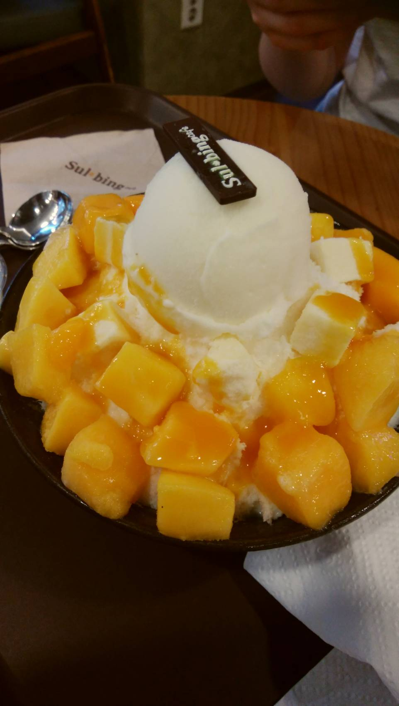
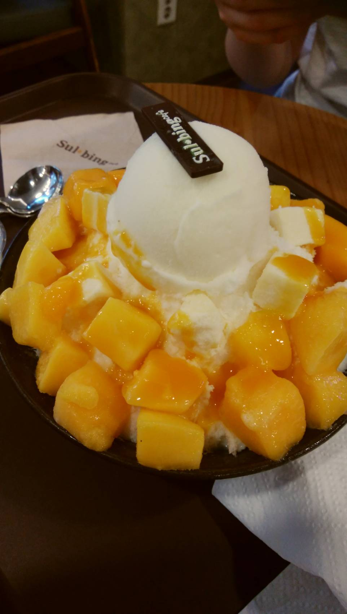

上の韓国料理紹介を見て、韓国料理に興味が湧いてきたあなたへ！この料理を食べた次に食べてほしいものを料理名だけですが紹介します！
気になった料理をクリックしてください。
 

私が韓国に行って思ったことの一つとして、韓国料理の種類の多さに驚きました！！以前アメリカに留学したことがあるのですが、日本人の私にとってアメリカの料理は味に大きな違いがなく、一か月でアメリカンフードに飽きてしまっていました。。それに比べて韓国は、豊富な料理の種類と日本人に親しみのある味付けで、一か月間全く料理に飽きませんでした！今回は、私が食べた料理のいくつかを紹介しますね😉
韓国料理の代表格と言ってもいいくらい有名な料理ですね。ビビンバにも2つ種類があるのをご存知でしょうか？石焼とそうでないものビビンバがあります。写真の石焼のビビンバはおこげがたまりませんね🤤
韓国人のソウルフードの一つとも呼ばれているチキンは、韓国で食べるべきものの一つです！味付けも様々で、あなたにとってのお気に入りの店を探してはどうでしょうか？
日本人にもなじみ深いチヂミ。韓国では、「부침개（プチムゲ）」や「전（ジョン）」、「파전（パジョン）」と呼ばれています。キョンヒ大学の最寄り駅は、この海鮮チヂミでとても有名な地域でした。お手ごろな価格で、チゲやトッポギなどとセットで頼むことができるので、腹も心も満たされます(*'▽')
最後に紹介するのは、コリアンデザートです💛 韓国流のかき氷ですが、貴方が想像しているかき氷と少し違うかもしれません。氷はかなりきめが細かく、うっすらとミルクの味がします。写真は抹茶味で、トッピングに餅がありますが、味は他にもチョコやマンゴーなど様々あります。
上の韓国料理紹介を見て、韓国料理に興味が湧いてきたあなたへ！この料理を食べた次に食べてほしいものを料理名だけですが紹介します！
気になった料理をクリックしてください。
